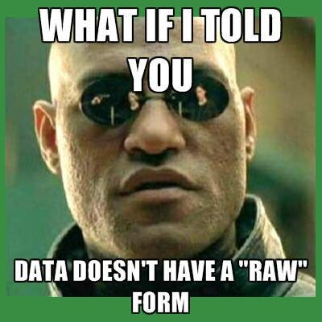
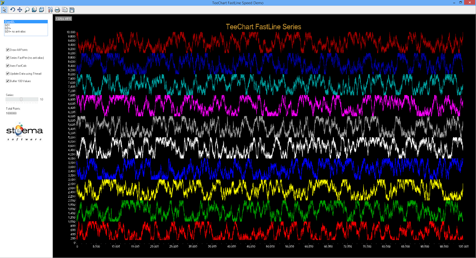

Capital One hired Kim Rees as its Head of Data Visualization. Kim Rees, famous in data visualization circles for helming Periscopic while it created iconic works and won awards. Capital One, the bank that sends you a thousand credit card offers every week and has the goofy “what’s in your wallet?” commercials. Let that sink in for a second. When I first heard about it, I thought it didn’t make sense. Banks aren’t innovators in tech, tech companies are innovators in tech. Why isn’t Google or AirBnB hiring a Head of Data Visualization? Shouldn’t that level of leadership investment in this critical area come from a tech giant, and not the bank that once did not one but a series of advertisements starring David Spade?
The answer, obviously, is no. And here’s why: Data visualization is about communication, and tech companies are so invested in their engineering roots that it’s hard for them to see data visualization as anything but an engineering problem. There’s a reason why organizations outside of tech are best-suited to drive innovation in data visualization: Tech companies tend to embody an ethos that frames communication as a struggle where the smartest understands the most, not a skill where the clearest communicates the best.
The result is that people in tech are too smart for data visualization. These engineers and scientists and hackers at the top tech companies are too busy in their consoles, reading the Matrix in its raw form. Data visualization is an afterthought, built by engineers for people who can’t grep properly. Contrast that with other organizations that don’t esteem CLIs or efficient search algorithms, where it’s okay to say you need help understanding the shape of complex patterns in data.

This situation is commonly held to be the result of a meritocracy, where data visualization products vie with each other as well as tabular displays of data in a marketplace of ideas. But if we had a functioning marketplace of ideas in industry, we wouldn’t see so many of the dropdown orgies that Moritz Stefaner bemoans. That can only happen when the evaluation metrics for data visualization are less clear or less stringent than the evaluation metrics for other products. That schizophrenia in evaluation also leads to data visualization products like the technological terrors that brag about showing hundreds of thousands of points of data, as if the problem with data visualization was that we just simply haven’t shown enough of it on-screen at once.

That’s the kind of product failure that data visualization practitioners aren’t good at calling out. We’re good at criticizing pie charts and 3D bar charts but we tend to quail at deep criticism of technically sophisticated solutions that don’t address the core needs of data visualization as a communication medium.
I can’t blame the data visualization community for being bad at correcting this. Most data visualization products are framed as solutions to engineering problems, and praised by engineers for checking off all the features that should make it a success. When you’re arguing about the poor design or lack of emphasis on communication, it makes you sound like some kind of self-important aesthete.
It comes from a misconception that data visualization is an engineering problem when it’s primarily a design problem. It’s the reason why engineers complain about how stakeholders don’t use the dashboards that were made for them, or how the new dashboard needs to look just like the old one because the stakeholders wouldn’t understand any changes. That’s an engineering mindset. It focuses on data visualization products as a set of checklists that are really about the data pipelines and filters which drive queries to produce the data. Data visualization is about communicating the features of the data, not providing the most features in an application.
Breaking through means not approaching data visualization as an engineering problem. That’s hard to do in organizations where engineering is the dominant culture, but it can happen. You can speak to engineers and analysts about principles of communication but you can’t do it by referring to those principles, or the theory behind them, or all those soft, design reasons. Instead, you need to show them catalogs of examples and winning stories. You need to explain that this dashboard or this chart made a difference, even though they don’t see any difference between it and this other garbage chart.
Another, less pleasant approach, is increasing our criticism of data visualization products. That’s one of those things that’s easy and hard. It’s easy in that there are terrible, terrible things I don’t say about charts I see all the time. But it’s hard because communicating is hard, especially when that communication is criticism. If you don’t frame your critique properly, you can come across as a snob or a pedant.
Those approaches deal with individual analysts and small teams focused on individual products but they don’t address The Skeptical Manager who has read just enough about data visualization to know that pie charts are bad (and probably that network diagrams are bad, too). Most people aren’t going to become experts in data visualization, they just want to know enough to make good decisions about it. But in this climate it’s too easy for them to only see the pieces telling them to focus on simple, effective data visualization rather than challenging, sophisticated data visualization. To challenge them you can use success stories like we do with individual projects but only to limited effect, and that’s why we need some high profile resources to come out of the structural debates we’ve been having in the community.
But that isn’t going to address a strategic problem like low data visualization literacy across an organization. To get there, you need buy in from leadership. That’s going to be hard because we’re back to the problem with evaluating data visualization products in a marketplace of ideas. The meritocratic approach only works if everyone has equal capacity to judge the ideas offered up in the marketplace of ideas. If that literacy isn’t there, the natural tendency will be to support conservative data visualization.
You might think all this discussion of how to achieve success in data visualization is wrong-headed because it’s too strategic. As it stands, data visualization practitioners tend to build up trust with individual stakeholders. It’s common to see situations where the same stakeholders are worked with over and over again. That’s because practitioners prefer working with stakeholders who “get it”. Otherwise you fight for every innovation in every new project. Developing trust works, but that elides an important point: trust is an individual thing.
Individuals trust individuals.
Data visualization practitioners don’t need trust, they need organizational support for the value of innovation in data visualization.
There was a time when people said, “Yeah, I know you crunched those numbers, but I’m not a stats guy, I make my decisions based on my gut” and could disregard the expertise of statisticians (what we now more sexily call data scientists). That’s what people are able to do right now with data visualization.
The data thing didn’t just change because data won in the marketplace of ideas, it changed because leadership in the valley made a conscious shift toward “data-driven decisions” and they thought it was a better approach, and fostered a culture to support that approach. But that means we need leaders saying, “You might not see the value of data visualization, but that’s not the fault of these data visualization products, that’s your fault.” It requires raising data visualization literacy and investing in data visualization innovation. And it would sound something like this:
Our company is committed to upping our game in data visualization. We know that we need more sophisticated charts to have more sophisticated engagement with the data that drives our company. You’re all encouraged to take these online classes and attend these tutorials and question the way we traditionally represent our data.
That’s leadership buying in.
That’s what we need to counteract a cultural resistance to investing in data visualization. Even with that, trust and design will still be important characteristics of every data visualization product. There’s something very different about building data visualization contrasted with other internal products — it’s less incremental, more iterative, more focused on that initial minimum viable product. But to get there, it requires a valuing communication and design over engineering, and that’s a hard thing for tech companies to do.
Strategic Innovation in Data Visualization Will Not Come From Tech was originally published in Visualizing, The Field on Medium, where people are continuing the conversation by highlighting and responding to this story.